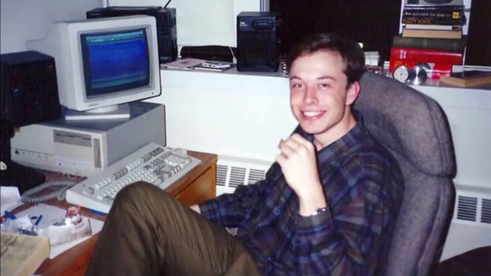
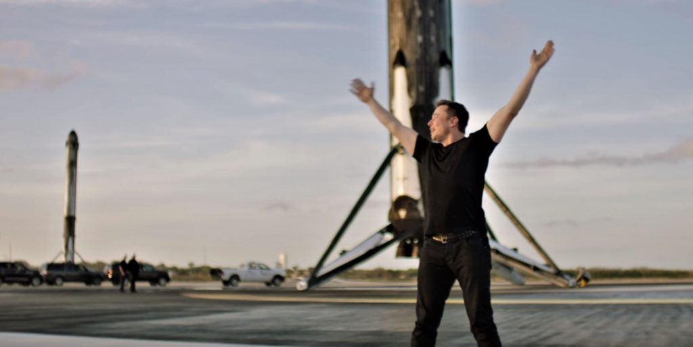
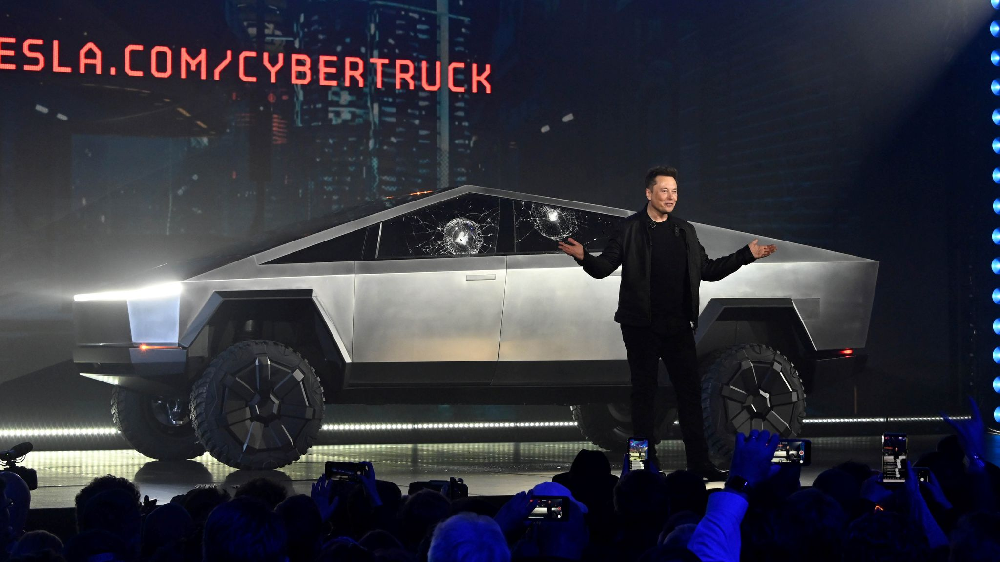

ELON MUSK

Elon Musk is a South African-born American entrepreneur and businessman who founded X.com in 1999 (which later became PayPal), SpaceX in 2002 and Tesla Motors in 2003. Musk became a multimillionaire in his late 20s when he sold his start-up company, Zip2, to a division of Compaq Computers.
He used to read 10 hours per day Musk learned BASIC in 3 days In 1983 he created a video game and sold it for 500$ At the age of 14, Elon decided that his life mission is to save humanity In 1989, he started college in Ontario In 1994, he got Wharton economics and physics degrees After that he worked two intern jobs and brainstormed ideas He left Stanford PhD after 2 days In 1995, Musk starts Zip2 with his brother, coding it himself.
After sleeping in the office for 3 months, he raised his first investment money (3M), and later sold his share for $22 Million In 1999, he starts X.com - an online bank with his own money In 2000, he merges with his rival start-up Confinity to form PayPal Later that same year, he got ousted from PayPal as a CEO (while on honeymoon). Regardless of that, Musk continues to invest money in it In 2001, Elon moved to LA to be closer to the space industry and learned how to build rockets from books
In 2008, the first TESLA customers got their Roadsters at $109,000. What is more, another failed attempt at launching a rocket brought both TESLA and Space X to the crisis of running out of money. In 2014, he started building the Gigafacory to mass produce batteries In 2017, he started the Boring Company to dig tunnels, two new cars were uvailed - TESlA Roadster In 2018, Elon Musk launched his largest rocket - The Falcon Heavy
